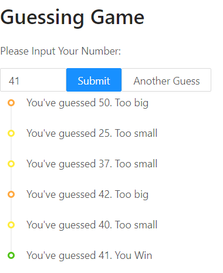

Chapter 1 Guessing Game
本章将使用 React、ant.design 做一个小的猜数游戏。
前置技术：
- 对 JavaScript（TypeScript）有初步的了解
- 知道 HTML 的标签一般成对出现
需要使用：
- 已安装好 Node.js、Yarn 如何安装？
- 编辑器 (推荐使用 Visual Studio Code)
- ESLint 插件
- Prettier 插件
- 浏览器 (推荐使用 Chrome)
- 良好的网络
最终效果

Init with create-react-app
我们使用 create-react-app 来创建一个简单的“单页应用”，用于学习。
习惯于 npm 和 npx，在终端中键入
npx create-react-app react-tutorial --typescript
习惯 yarn，在终端中键入
yarn create react-app react-tutorial --template typescript
接着进入 create-react-app 创建的文件夹
cd react-tutorial
yarn add typescript @types/node @types/react @types/react-dom @types/jest --dev
创建的文件夹中有如下内容：
node_modules/
...
public/
...
src/
App.tsx
index.tsx
...
.gitignore
package.json
README.md
tsconfig.json
yarn.lock
我们接下来需要做的是修改 App.tsx，在其中实现一个猜数字的小游戏。
yarn start
启动 React 应用，在浏览器中打开localhost:3000查看应用
添加 ant.design 并实现基本框架
一个与本节基本一致的 CodeSandbox 中的 demo
我们使用蚂蚁金服开源的 Ant Design of React 组件库，在终端中键入
yarn add antd
这条命令将 antd 添加到了项目的node_modules，打开package.json便可以找到形式这样的一段：
"dependencies": {
...
"antd": "^4.3.3",
...
},
这表示，本项目依赖 4.3.3 版本的 antd，在任何一个具有此package.json的文件夹中都可以根据它使用 npm 或 yarn 设置好相应环境。
然后我们修改src/App.css，在最前面添加一行@import "~antd/dist/antd.css";用于启用 antd 提供的样式。再打开src/App.tsx，清除所有内容，并仿照下面代码搭建游戏的框架。
import React, { useState } from "react";
import { InputNumber, message } from "antd";
import "./App.css";
const App: React.FC = () => {
const [guess, setGuess] = useState<number>(0);
const onInputChange = (value: number | string | undefined) => {
message.info(`You guess ${value}`);
if (value) setGuess(parseInt(value.toString()));
};
return (
<div>
<h1>Guessing Game</h1>
<p>Please Input Your Number:</p>
<InputNumber defaultValue={3} onChange={onInputChange} />
<p>You guess {guess}</p>
</div>
);
};
export default App;
这段代码添加了一个输入框，并在输入框中数字改变时弹出一个提示信息。
React.FC是“函数式组件”的缩写，使用它来告诉编译器App是一个函数组件。
const [guess, setGuess] = useState<number>(0);使用 React 的state Hook，表示组件<App />中有个状态叫做guess，初始化为 0。
<div>
<h1>Guessing Game</h1>
<p>Please Input Your Number:</p>
<InputNumber defaultValue="{3}" onChange="{onInputChange}" />
<p>You guess {guess}</p>
</div>
return 返回的是TSX，简单来说类似 HTML，可以用<Component />的形式添加 React 的组件，也可以用{var}的形式调用前面定义的变量。
const onInputChange = (value: number | string | undefined) => {
message.info(`You guess ${value}`);
if (value) setGuess(parseInt(value.toString()));
};
声明函数onInputChange，参数类型为 number 或 string 或 undefined，为了与 antd 提供的组件<InputNumber />的onChange一致。其功能为弹出一个信息，显示当前输入的数，并在非空时将数存入状态guess中。
实现游戏功能
一个与本节基本一致的 CodeSandbox 中的 demo
接下来添加随机数生成功能，使用Math.random()可以生成一个 0 到 1 之间的数，再结合乘法和Math.floor()向下取整便可以得到一个随机数生成器。但是如果简单的放在组件内部，React 每次渲染的时候都会重新生成，游戏便无法正常工作。因此也采用state来保存这个目标数字——使用 React 的state Hook，用 1 到 100 的随机数进行初始化。
const [secret, setSecret] = useState(Math.floor(Math.random() * 100 + 1));
下面再添加一个按钮，用于点击的时候输出一个信息表示现在猜的数字是偏大、偏小还是“完全一致”。为方便，输出信息还是使用 antd 提供的message。
import { Button, InputNumber, message } from "antd";
...
const App: React.FC = () => {
const handleSubmit = () => {
if (guess < secret) message.info("Too small");
else if (guess > secret) message.info("Too big");
else message.success("You win");
};
return (
<div>
...
<Button onClick={handleSubmit} type="primary">
Submit
</Button>
</div>
);
}
这段代码加入了一个简单的函数进行判断，用于在点击按钮时使用此时的状态guess和secret进行大小比较。
我们会注意到，前面定义的setSecret并未使用，运行检查会提示这里有个warning。为了解决这个warning，我们考虑再加入一个按钮，当游戏结束的时候可以点击按钮重置随机数，开始下一轮游戏。
const handleRandom = () => {
setSecret(Math.floor(Math.random() * 100 + 1));
};
...
<Button onClick="{handleRandom}">
Another Guess
</Button>;
加入一个handleRandom函数，调用setSecret对随机生成的数进行重制，再添加一个按钮用于点击时触发该函数。不过这样游戏还未结束便可以进行重制，感觉不太好，再加入对按钮的限制好了。
const [randomAble, setRandomAble] = useState(false);
const handleSubmit = () => {
...
else {
message.success("You win");
setRandomAble(true);
}
};
const handleRandom = () => {
setSecret(Math.floor(Math.random() * 100 + 1));
setRandomAble(false);
};
<Button onClick={handleRandom} disabled={!randomAble}>
Another Guess
</Button>
这样便加入了对重制游戏按钮可用性的限制，通过整个App的状态randomAble进行控制。当游戏结束时，将限制解除，点击重制后再进行限制。
最终代码如下。
import React, { useState } from "react";
import { Button, InputNumber, message } from "antd";
import "./App.css";
const App: React.FC = () => {
const [secret, setSecret] = useState(Math.floor(Math.random() * 100 + 1));
const [guess, setGuess] = useState<number>(0);
const [randomAble, setRandomAble] = useState(false);
const onInputChange = (value: number | string | undefined) => {
if (value) setGuess(parseInt(value.toString()));
};
const handleSubmit = () => {
if (guess < secret) message.info("Too small");
else if (guess > secret) message.info("Too big");
else {
message.success("You win");
setRandomAble(true);
}
};
const handleRandom = () => {
setSecret(Math.floor(Math.random() * 100 + 1));
setRandomAble(false);
};
return (
<div>
<h1>Guessing Game</h1>
<p>Please Input Your Number:</p>
<InputNumber
defaultValue={3}
onChange={onInputChange}
onPressEnter={handleSubmit}
/>
<Button onClick={handleSubmit} type="primary">
Submit
</Button>
<Button onClick={handleRandom} disabled={!randomAble}>
Another Guess
</Button>
<p>
You guess {guess}
{/*secret {secret}*/}
</p>
</div>
);
};
export default App;
显示猜测的历史
一个与本节基本一致的 CodeSandbox 中的 demo
现在我们再用 antd 提供的Timeline组件对猜测历史进行渲染。这里同时介绍一下如何定义一个组件，用于将历史渲染的逻辑和游戏的主逻辑尽可能分离。
显然，对于这个小游戏是没必要进行分离的。组件分离层次化一般能起到复用和清晰化的效果。具体使用时如何设计组件并没有定式，推荐阅读React 哲学。
在src文件夹下新建一个history.tsx，先在其中引入我们需要用到的库并搭一个组件的框架
import React from "react";
import { Timeline } from "antd";
const History: React.FC = () => {
return <div></div>;
};
export default History;
需要进行渲染的历史需要通过props传入<History />中，因此我们要添加相应的接口
interface HistoryProps {
history: { value: number; status: string }[];
}
const History: React.FC<HistoryProps> = ({ history }) => {
...
}
这里我们声明了一个HistoryProps作为<History />的接口，其中只有一个history，是由{ value: number; status: string }这样的object构成的“数组”。在定义<History />时使用React.FC<HistoryProps>是定义一个接口为HistoryProps的 React 函数式组件。
接着我们需要将有外层组件传入的history转化为 antd 的<Timeline />的子项形式
<Timeline>
<Timeline.Item>aaa</Timeline.Item>
<Timeline.Item>bbb</Timeline.Item>
<Timeline.Item>ccc</Timeline.Item>
<Timeline.Item>ddd</Timeline.Item>
</Timeline>
使用map将history中的每一项都转化为<Timeline.Item>xxx</Timeline.Item>的形式
const historyList = history.map((element) => {
return (
<Timeline.Item
color={
element.status === "You Win"
? "green"
: element.status === "Too small"
? "#ffec3d" // 黄色
: "#ffa940" // 橙色
}
>
You've guessed {element.value}. {element.status}
</Timeline.Item>
);
});
这段代码会遍历整个history，将其中的每一项转变为<Timeline.Item color="xxx">You've guessed {element.value}. {element.status}</Timeline.Item>的形式。其中猜测偏小时渲染为黄色，猜测偏大时渲染为橙色，猜对时渲染为绿色。
最后再将historyList作为返回值的一部分
return (
<div style={{ padding: 10 }}>
<Timeline>{historyList}</Timeline>
</div>
);
到这里，<History />就定义完了，我们要在<App />中调用此组件。首先引入该组件，并定义一个存储猜测历史的状态
import History from "./history";
const [history, setHistory] = useState<{ value: number; status: string }[]>(
[]
);
然后修改handleSubmit和handleRandom，加入对历史的修改
const handleSubmit = () => {
if (guess < secret) {
message.info("Too small");
setHistory([...history, { value: guess, status: "Too small" }]);
} else if (guess > secret) {
message.info("Too big");
setHistory([...history, { value: guess, status: "Too big" }]);
} else {
message.success("You win");
setHistory([...history, { value: guess, status: "You Win" }]);
setRandomAble(true);
}
};
const handleRandom = () => {
setSecret(Math.floor(Math.random() * 100 + 1));
setHistory([]);
setRandomAble(false);
};
最后在<App />返回的渲染中添加<History />
return (
...
<History history={history} />
);
到此，我们已经实现了游戏的整体功能，渲染效果应与本章最开始的图片一致。
最后的最后，我们再简单看看effect Hook。这是 React 提供的用于执行“副作用”操作的部分，一般用于执行一些网络请求等。
useEffect(() => {
document.title = `You guess ${guess}`;
}, [guess]);
这一段是在guess改变时，自动修改网页的标题为“You guess ${guess}”
Node.js & Yarn
本节简单介绍一下 Node.js 和 Yarn 的安装与使用
Node.js
Node.js 是一个基于 Chrome V8 引擎的 JavaScript 运行时，我们写好的 JavaScript 代码将使用 Node.js 执行。
可以从以下链接获取安装包：
推荐使用尽可能新的长期支持版本，具体安装步骤可以参考（略过时的）菜鸟教程。
由于我们目前尚不需要使用 nvm（Node Version Manager）对 Node.js 进行版本管理，有需要的可以自行搜索学习。
安装完 Node.js 后，也一并安装完了 npm（Node Package Manager），可以使用npm install安装需要的 JavaScript 包。
由于各种原因，推荐使用淘宝镜像对 npm 进行加速
npm config set registry https://registry.npm.taobao.org
Yarn
Yarn 是比 npm（相对）更好的依赖管理工具，官网。可以使用 npm 进行安装
npm install -g yarn
由于各种原因，推荐使用淘宝镜像对 yarn 进行加速
yarn config set registry https://registry.npm.taobao.org
常用命令
初始化一个新项目
yarn init
添加依赖包
yarn add [package]
yarn add [package]@[version]
yarn add [package]@[tag]
将依赖项添加到不同依赖项类别中
分别添加到 devDependencies、peerDependencies 和 optionalDependencies 类别中：
yarn add [package] --dev
yarn add [package] --peer
yarn add [package] --optional
升级依赖包
yarn upgrade [package]
yarn upgrade [package]@[version]
yarn upgrade [package]@[tag]
移除依赖包
yarn remove [package]
安装项目的全部依赖
yarn
或者
yarn install